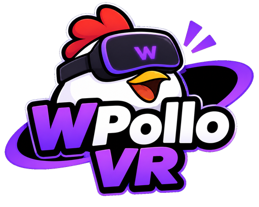

Esta é a única tela 2D do Wpollo VR. Depois de iniciar, coloque o celular no VR Box.
Fusão própria: giroscópio a 200 Hz + acelerômetro (gravidade) + magnetômetro (norte). Pular de verdade = pular nos jogos. Altura da cabeça até o chão: no APK, use "Altura (chão)" na central de controle (barômetro) — o magnetômetro mede campo magnético, não distância.
Joy-Con / controle Bluetooth: pareie antes. Com controle, o clique vem dos botões e a mão só aponta.